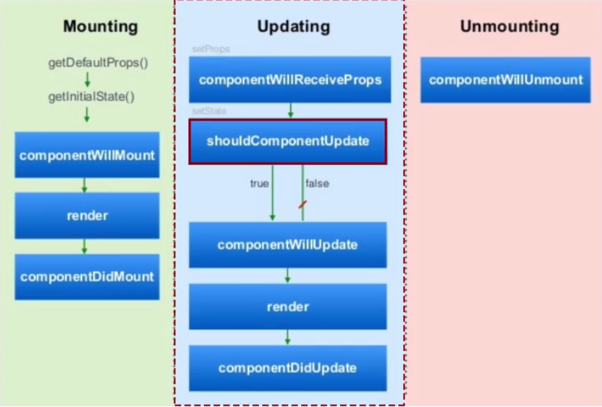

开始是去看一些视频想入门一下，发现好多视频都很发散，讲React不够透彻清晰，后来还是发现了阮大神的React笔记，写得不错！
一、简介
React在2013年的F8大会上提出，它不是一个完整的MVC，MVVM框架，解决了Angular性能不高，封装复杂不利于重用等问题。React的特点就是轻，快速，组件化开发，它的部分使用场景如下：
- 复杂场景下的高性能；
- 重用组件库，组件组合；
- write less，do more；
React 15
2016年4月，React v15.0正式发布，版本号从0.14直接跳到15，表示React已经开发了很久，也就是说更成熟更强大了。值得注意的是，v15版本不再积极支持IE8。新版本在DOM交互上带来了重大改进：
- 安装组件（mounting components）时使用
document.createElement，而不是修改innerHTML，这将使得我们不用为每个节点都设置data-reactid，让DOM更轻巧了。- 提供了对SVG的完整支持；
- 修复了React会额外输出
<span>标签的bug；- 使用注释节点来渲染 null，功能组件也能够返回null了；
JSX
JSX全称 JavaScript XML，是一种类 XML 语言，它没有修改 JavaScript 语义。虽然使用React不是必须使用JSX，但是官方更推荐使用，因为它能定义简洁且我们熟知的包含属性的树状结构语法。
React可以渲染HTML标签(strings)或React组件(classes)，示例如下：1
2
3
4
5
6
7
8/*要渲染HTML标签，只需在JSX里使用小写字母开头的标签名*/
var myDivElement = <div className="foo" />;
React.render(myDivElement, document.body);
/*要渲染 React 组件，只需创建一个大写字母开头的本地变量。*/
var MyComponent = React.createClass({/*...*/});
var myElement = <MyComponent someProperty={true} />;
React.render(myElement, document.body);
React 的 JSX 里约定分别使用首字母大、小写来区分本地组件的类和 HTML 标签。
注意:
由于 JSX 就是 JavaScript，一些标识符像class和for不建议作为 XML 属性名。作为替代，React DOM 使用className和htmlFor来做对应的属性。
React组件
组件是React的核心，组件的设计目的在于提高代码复用率，降低测试难度和代码复杂度。
一个React组件在生命周期内有三个状态：
- Mounted：装载，表示React组件被解析成对应的DOM节点，并被插入DOM树中；
- Update：更新，表示已装载的组件被重新渲染的过程，一般被
setState()和setProps()触发； - Unmounted：卸载，DOM节点被销毁；
三个状态中可以使用的hook函数如下：

二、第一个React应用
刚学习React真是千头万绪，还是从经典的Hello World开始吧，在此之前先看一下React应用的大致HTML结构：1
2
3
4
5
6
7
8
9
10
11
12
13
14
15
16
17
18
<html>
<head>
<!--React 的核心库-->
<script src="../build/react.js"></script>
<!--提供与 DOM 相关的功能-->
<script src="../build/react-dom.js"></script>
<!--Browser.js 的作用是将 JSX 语法转为 JavaScript 语法-->
<script src="../build/browser.min.js"></script>
</head>
<body>
<div id="example"></div>
<!--JSX语法跟 JavaScript 不兼容。凡是使用 JSX 的地方，都要加上 type="text/babel"-->
<script type="text/babel">
// ** Our code here! **
</script>
</body>
</html>
要实现Hello World只需在Our code here处加入以下代码：1
2
3
4ReactDOM.render(
<h1>Hello, world!</h1>,
document.getElementById('example')
);
ReactDOM.render()是最基本的方法，用于将模板转为HTML语言，并插入指定的DOM节点。第一个参数就是模板（虽然长得很像DOM标签，但时刻记住它不是真正的DOM标签），第二个表示要插入的位置（在指定位置内插入模板渲染后的节点）。结合JSX，我们还可以轻易实现DOM节点的循环生成：1
2
3
4
5
6
7
8
9
10
11
12var names = ['Alice', 'Emily', 'Kate'];
ReactDOM.render(
<div>
{ //JSX遇到"{"开头就用JavaScript的规则解析
names.map(function (name) { //遇到"<"开头就用HTML规则解析
return <div>Hello, {name}!</div>
})
}
</div>,
document.getElementById('example')
);
三、 组件
组件（component）是React实现模块化的关键，我们可以像插入普通HTML标签一样插入一个组件。React.createClass用于创建一个组件类：1
2
3
4
5
6
7
8
9
10
11
12//组件类必须以大写字母开头
var HelloMessage = React.createClass({
render: function() { //render方法用于输出组件，不可缺省
return <h1>Hello {this.props.name}</h1>;
}
});
ReactDOM.render(
//此处会自动生成一个HelloMessage的实例
<HelloMessage name="John" />,
document.getElementById('example')
);
React组件输出多个标签时需要用一个顶层标签（比如div）包裹，否则会报错。组件的属性可以在组件类的this.props对象上获取。组件属性中有一个特别的对象：this.props.children。这个对象用于获取组件的所有子节点：1
2
3
4
5
6
7
8
9
10
11
12
13
14
15
16
17
18
19
20
21var NotesList = React.createClass({
render: function() {
return (
<ol>
{
React.Children.map(this.props.children, function (child) {
return <li>{child}</li>;
})
}
</ol>
);
}
});
ReactDOM.render(
<NotesList>
<span>hello</span>
<span>world</span>
</NotesList>,
document.body
);
渲染的结果是：1
2
3
4
5
6
7
8
9
10<div id="example">
<ol data-reactroot>
<li>
<span>hello</span>
</li>
<li>
<span>world</span>
</li>
</ol>
</div>
React 提供一个工具方法 React.Children 来处理 this.props.children。我们可以用 React.Children.map 来遍历子节点。React.Children主要有map、forEach、count、only和toArray方法。